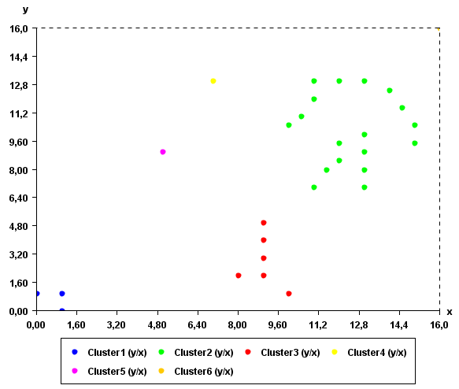

Clustering using a Hierarchical Clustering algorithm (SPMF documentation)
This example explains how to run the Hierarchical Clustering algorithm using the SPMF open-source data mining library.
How to run this example?
- If you are using the graphical interface, (1)
choose the "HierarchicalClustering" algorithm, (2) select the input file "inputDBScan2.txt",
(3) set the output file name (e.g. "output.txt")
(4) set maxDistance to 4 (5) click "Run
algorithm".
Note that there is also an optional parameter called "separator" if you want to use other types of input files where values are not separated by spaces. For example, for a file separated by ',', the parameter "separator" would have to be set to ",". - If you want to execute this example from the command line,
then execute this command:
java -jar spmf.jar run Hierarchical_clustering inputDBscan2.txt output.txt 4 euclidian in a folder containing spmf.jar and the example input file inputDBScan2.txt. - If you are using the source code version of SPMF, launch the file "MainTestHierarchicalClustering.java" in the package ca.pfv.SPMF.tests.
What is this algorithm?
We have implemented a hierarchical clustering algorithm that is based on the description of Hierarchical Clustering Algorithms
from
http://home.dei.polimi.it/matteucc/Clustering/tutorial_html/hierarchical.html.
The algorithm is used to separate a set of instances (vectors of double values each having a name)
into groups of instances (clusters) according to their similarity. In
this implementation the euclidean distance is used to compute the
similarity.
The algorithm works as follow. It first create a cluster for each single instance (vector). Then it recursively try to merge clusters together to create larger clusters. To determine if two clusters can be merged, a constant "threshold" indicate the maximal distance between two clusters for merging.
In this implementation the user can choose between various distance functions to assess the similarity between vectors. SPMF offers the Euclidian distance, correlation distance, cosine distance, Manathan distance and Jaccard distance.
What is the input?
The input is a set of instances (each having a name and containinga vector of double values), a parameter "maxdistance" and a distance function.
The input file format is a text file containing several instances.
The first lines (optional) specify the name of the attributes used for describing the instances. In this example, two attributes will be used, named X and Y. But note that more than two attributes could be used. Each attribute is specified on a separated line by the keyword "@ATTRIBUTEDEF=", followed by the attribute name
Then, each instance is described by two lines. The first line (which is optional) contains the string "@NAME=" followed by the name of the instance. Then, the second line provides a list of double values separated by single spaces.
An example of input is provided in the file "inputDBScan2.txt" of the SPMF distribution. It contains 31 instances, each described by two attribute called X and Y.
@ATTRIBUTEDEF=X
@ATTRIBUTEDEF=Y
@NAME=Instance1
1 1
@NAME=Instance2
0 1
@NAME=Instance3
1 0
@NAME=Instance4
11 12
@NAME=Instance5
11 13
@NAME=Instance6
13 13
@NAME=Instance7
12 8.5
@NAME=Instance8
13 8
@NAME=Instance9
13 9
@NAME=Instance10
13 7
@NAME=Instance11
11 7
@NAME=Instance12
8 2
@NAME=Instance13
9 2
@NAME=Instance14
10 1
@NAME=Instance15
7 13
@NAME=Instance16
5 9
@NAME=Instance17
16 16
@NAME=Instance18
11.5 8
@NAME=Instance20
13 10
@NAME=Instance21
12 13
@NAME=Instance21
14 12.5
@NAME=Instance22
14.5 11.5
@NAME=Instance23
15 10.5
@NAME=Instance24
15 9.5
@NAME=Instance25
12 9.5
@NAME=Instance26
10.5 11
@NAME=Instance27
10 10.5
@NAME=Instance28
9 3
@NAME=Instance29
9 4
@NAME=Instance30
9 5
For example, the first instance is named "Instance1", and it is a vector with two values: 1 and 1 for the attributes X and Y, respectively.
This input file represents a set of 2D points. But note that, it is possible to use more than two attributes to describe instances. To give a better idea of what the input file looks like, here is a visual representation:

The algorithm will group the instances according to their similarity. To do this, it is also necessary to specify the distance function to be used for comparing the instances. The distance function can be the Euclidian distance, correlation distance, cosine distance, Manathan distance and Jaccard distance. In the command line or GUI of SPMF, the distance function is specified by using one of these keywords: "euclidian", "correlation", "cosine", "manathan" and "jaccard" as parameter. In this example, the euclidian distance is used.
Furthermore, the user should also provide a parameter called maxDistance (a positive value > 0) to the algorithm. This parameter indicate the maximal distance allowed between the mean of two clusters to merge them into a single cluster.
What is the output?
The algorithm groups instances in clusters according to their similarity. In SPMF, the similarity is defined according to the distance function chosen by the user such as the Euclidian distance.
By running the algorithm on the previous input file with maxDistance = 4 , we can obtain the following output file containing 6 clusters:
@ATTRIBUTEDEF=X
@ATTRIBUTEDEF=Y
[Instance1 1.0 1.0][Instance2 0.0 1.0][Instance3 1.0 0.0]
[Instance4 11.0 12.0][Instance5 11.0 13.0][Instance6 13.0 13.0][Instance21 12.0 13.0][Instance26 10.5 11.0][Instance27 10.0 10.5][Instance7 12.0 8.5][Instance18 11.5 8.0][Instance8 13.0 8.0][Instance9 13.0 9.0][Instance20 13.0 10.0][Instance25 12.0 9.5][Instance10 13.0 7.0][Instance11 11.0 7.0][Instance21 14.0 12.5][Instance22 14.5 11.5][Instance23 15.0 10.5][Instance24 15.0 9.5]
[Instance12 8.0 2.0][Instance13 9.0 2.0][Instance14 10.0 1.0][Instance28 9.0 3.0][Instance29 9.0 4.0][Instance30 9.0 5.0]
[Instance15 7.0 13.0]
[Instance16 5.0 9.0]
[Instance17 16.0 16.0]
The output file format is defined as follows. The first few lines indicate the attribute names. Each attribute is specified on a separated line with the keyword "ATTRIBUTEDEF=" followed by the attribute name (a string). Then, the list of clusters is indicated. Each cluster is specified on a separated line, listing the instances contained in the cluster. An instance is a name followed by a list of double values separated by " " and between the "[" and "]" characters.
The clusters found by the algorithm can be viewed visually using the "Cluster Viewer" provided in SPMF. If you are using the graphical interface of SPMF, click the checkbox "Cluster Viewer" before pressing the "Run Algorithm" button. The result will be displayed in the Cluster Viewer.

As it can be seen in this example, the result somewhat make sense. Points that are close to each other have put in the same clusters.
Applying this algorithm to time series
Note that this algorithm implementation in SPMF can also be applied to time series database such as the file contextSAX.txt in the SPMF distribution. To apply this algorithm to time series, it is necessary to set the "separator" parameter of this algorithm to "," since time series files separate values by "," instead of separating by spaces.
Where can I get more information about Hierarchical clustering?
There is a good introduction here:http://home.dei.polimi.it/matteucc/Clustering/tutorial_html/hierarchical.html.
Moreover, you could also read the free chapter on clustering from the book "introduction to data mining" by Tan, Steinbach and Kumar on the book website.